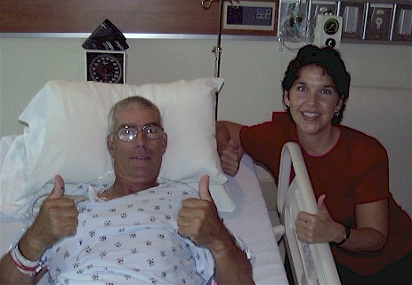

2002
|
 |
|
| I'm not going to get all preachy on you, but I
do have a story to tell that speaks for itself. In March of this year,
my Mom was told that 4 out of 4 tests for colon cancer had come back
positive. We spent three weeks thinking she had colon cancer while we
waited for her colonoscopy appointment. Our family and friends prayed
our hearts out for Mom during that time, asking that it turn out to be a
terrible mistake.
I believe in the power of prayer and I trusted that God would listen to us and make Mom OK. I never felt the terrible fear or dread that you might expect while we waited for the scope test, I just knew our prayers would be answered. Finally she went in for her test and it showed a perfectly healthy colon. Turns out she had a bad bacterial infection in her stomach. It took several weeks of harsh medicine to cure it, but thankfully she is all better now. Our family took that as such a blessing. We were very thankful to have Mom well and to get our lives back to normal. In mid-August my Dad went in for a routine check up. An x-ray revealed a large mass in his chest. Dad then had to see a lung specialist who told him he felt 90% certain that the mass was cancer. Then Dad visited the surgeon who said he felt 95% sure that a mass that size had to be cancer. With such terrible odds against us, we contacted everyone we knew and asked them to pray about this. All of our family and friends were very helpful and supportive during the weeks we had to wait for the surgery. This is the point where my strength ran out on me. I stayed positive through Mom's ordeal and through the first part of Dad's tests. But after hearing the 95% chance, I felt the best we could hope for was a quick and complete recovery. This time I did feel the terrible fear and dread, but I kept on praying that God would get us all through it in the end. On September 23 my Dad went in for surgery. They planned to remove the upper left lobe of his lung (which is by far the largest and the lobe which does most of the filtering for your breathing), part of his lymph nodes, and the tumor - which often requires removing a rib. Lung surgery is a very serious and painful surgery, and it takes at least two months to recover. We knew that if chemo or radiation treatment was needed, Dad would be in pain for a very long time. We were told the surgery would last two to five hours. Imagine our surprise when they came out after only one hour to tell us they were finished. In the 15 minutes we had to wait between the end of the surgery and the time Dad's doctor came out to talk to us, our minds were full of a crazy mix of hope and dread. I wanted so much to believe that the quick surgery was good news, but I could tell that some of the others thought it was more likely the cancer was so bad they were just going to leave it alone. I will never, never forget that moment when the surgeon came out and said, "I removed a softball-sized tumor from the left lung and it was benign." He said a bunch of other things after that but I didn't hear a thing. My mind was so full of, "Thank you Lord, Thank you Lord, Thank you Lord..." that I couldn't hear anything but my own sobs. I have never felt so much relief in my entire life. In the end they didn't remove much of his lung at all, left his lymph nodes alone, and didn't even break a rib. My Dad beat the odds in a big way. I honestly feel that I witnessed a miracle that day and I am so very thankful. To consider that in 6 months time, both my parents were told with extreme certainty that they had cancer. Then after weeks of praying, further test proved they didn't. It is so much of a blessing that it can't be ignored. Thank you to all out friends, family, and co-workers who prayed for us
during these trying times. We truly appreciate the part you played in
helping our family be whole and healthy again. Thank you Lord!! |
|